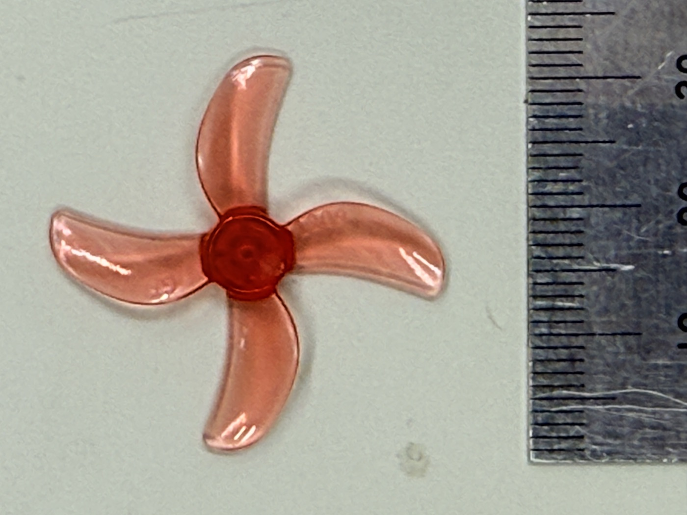
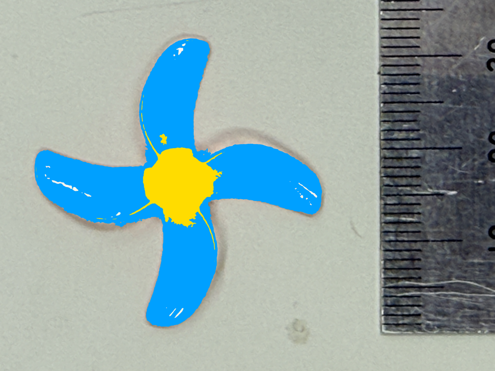

重さ 0.235 g のプロペラの慣性モーメントを、どうやって測るか。 捻り振子にかけるには軽すぎ、CAD データはありません。 答えは真上から写真を撮って、画素を数える—— デジタルカメラをそのまま測定器にする方法です。
B.1 原理 — 慣性モーメントは「r² の平均」
慣性モーメントの定義は \(I = \int r^2\,dm\)。プロペラのように 薄くて厚みがほぼ一様な部品なら、質量は面積に比例して分布する （\(dm = (M/A)\,dA\)）ので:
つまり総質量 ×「面積で平均した \(r^2\)」。 そして写真の1画素は面積の1標本ですから、部品に属する画素を \(N\) 個集めれば:
積分が「画素の \(r^2\) を足して割るだけ」になります。 これを画素直接積分と呼ぶことにします。 形の近似（長方形・台形など）を一切挟まないのがポイントです。
B.2 手順 — 撮る、塗り分ける、数える
- 撮影: プロペラを定規と一緒に、できるだけ真上から撮ります。 定規の目盛りから「1画素 = 何mm」のスケールを決めます（視差を抑えるため 離れて望遠気味に撮るのがコツ）。
- セグメンテーション（画像を領域に塗り分ける処理）: 色の違いを使って、ハブ（中心の円盤）とブレードを画素単位で分類します。
- 数える: 重心（=回転中心）を求め、各部品の画素について \(r_i^2\) を平均します。


B.3 2つの仕上げ — 投影補正と、部品ごとの質量
投影補正: ブレードは取付角（ピッチ角）だけ傾いて付いているので、 真上からの写真では翼弦方向が \(\cos\)（取付角）だけ縮んで写ります。 刻印「1209」（直径 31 mm・ピッチ 0.9 インチ）から各半径の取付角を計算し、 画素の面積重みを補正します。
質量の割り当て: ハブとブレードは厚みが違うので、 「全体で一様」とは仮定せず、ハブ 0.140 g・ブレード 0.095 g（4枚合計）を 個別に秤量して、それぞれの \(\langle r^2\rangle\) に割り当てます。 ハブは中心付近にいるので \(r^2\) が小さく、慣性への寄与はわずか—— 効くのはブレード、特に翼端側です。
B.4 結果と照合
- プロペラ: \(J_{prop} = 1.030\times10^{-8}\ \mathrm{kg\,m^2}\)（本法）
- 回転子（モータ内部）: \(J_{rotor} = 3.45\times10^{-9}\ \mathrm{kg\,m^2}\) ——こちらはモータを分解し、コイルかご（外径6mm・肉厚0.65mm・高さ12.4mm の コップ形状、総質量0.58g）の実測寸法から計算
- 合計 \(J_{mp} = 1.375\times10^{-8}\ \mathrm{kg\,m^2}\)。 付録Aのコーストダウン（\(J = C_Q \cdot (J/C_Q) = 1.37\times10^{-8}\)）と 独立な方法どうしで一致——ここまで来て初めて数字を信じられる
データ: assets/IMG_3575.JPG（定規つき上面写真）。質量はデジタル秤で実測 （ハブ 0.140 g、ブレード 0.02375 g × 4）。 解析の再現: notes/calc/prop_inertia_photo.py（セグメンテーションと積分）、 notes/calc/rotor_inertia_specs.py（回転子）。